本包逐图公开合成界面、准确来源及独立结论。ADAPTED是明确适配；MAPPED是同类容器；MISSING是缺直接原参考；FAIL保留可见问题。拍图/并包完整不等于严格全产品1:1，也不证明真实桌面。旧图、旧失败和旧源码身份不倒改；修复须另看新来源。
verified-gap-kernel-demo-list-dense-bottom · 1440×900
MAPPED — 演示内核第一页10行及完整分页、能力说明可读；表区内容自然放得下，保存底部为0/630/630，不虚称正向滚动。保留48px行、10px间隔与10条分页，仅原代理列表容器映射，不证明真实安装。
同类参考容器：proxy-list；不是同名原商业执行。
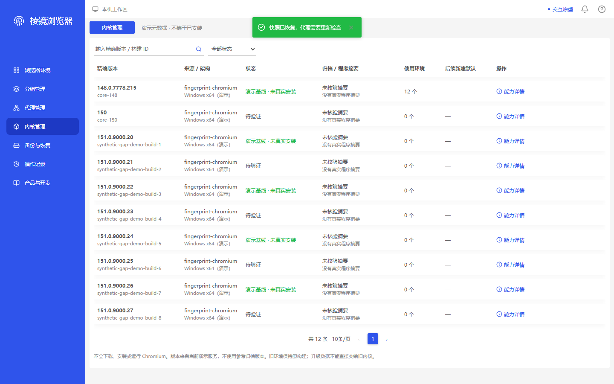
a51874f73d5ab85cb73e1b21415a6fbcfe537e362fb3c11d9f416aaf1c1f33fc
verified-gap-kernel-demo-list-dense-page-two · 1440×900
MAPPED — 演示内核第2页准确末两条合成元数据、页数与禁用下一页可见，分页及能力说明完整；48px行与10px间隔未缩减。仅原代理列表容器映射，不是原两条代理业务或真实内核登记。
同类参考容器：proxy-list；不是同名原商业执行。
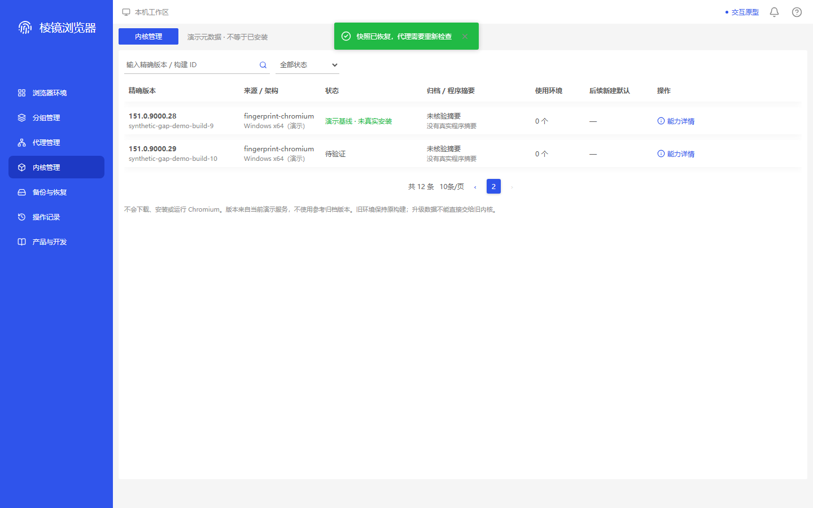
1d3555e070c4dd9ea78ef0c97bad26249abe55613200248a5b5f518c3976c022
verified-gap-kernel-native-list-dense-bottom · 1440×900
MAPPED — 合成本机内核第一页10行、完整分页与能力边界可读；实际表区0/630/630自然达到底端，未缩行或少放记录。列表报告及核验状态来自合成服务，仅原代理列表容器映射，不证明真实安装或环境读值。
同类参考容器：proxy-list；不是同名原商业执行。
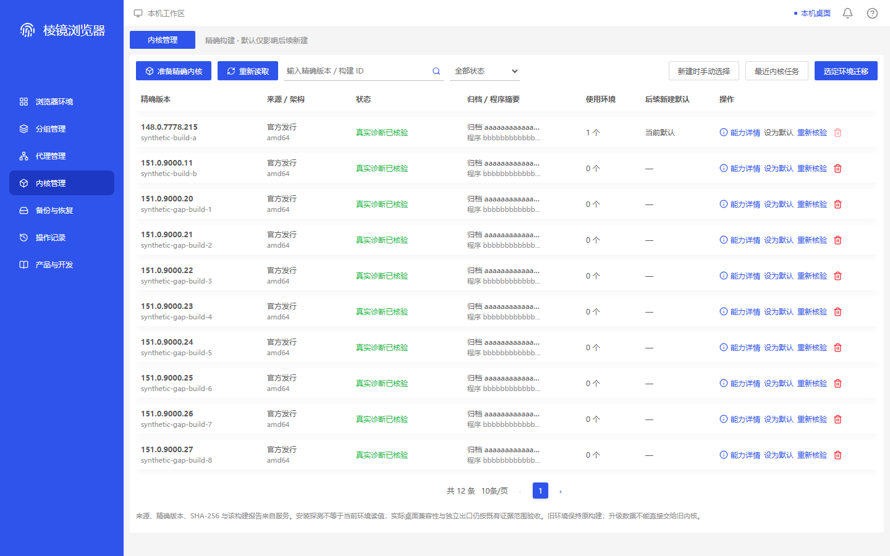
0719b36d06a776908a8760d52329a42e51ecdebc1c4d46a3813a5908faa7919f
verified-gap-kernel-native-list-dense-page-two · 1440×900
MAPPED — 合成本机内核第2页末两条准确构建及对应操作可见，分页、禁用下一页与安装探测不等于当前环境读值的说明完整。仅原代理列表容器映射；记录状态不是本复核新执行的真实核验。
同类参考容器：proxy-list；不是同名原商业执行。
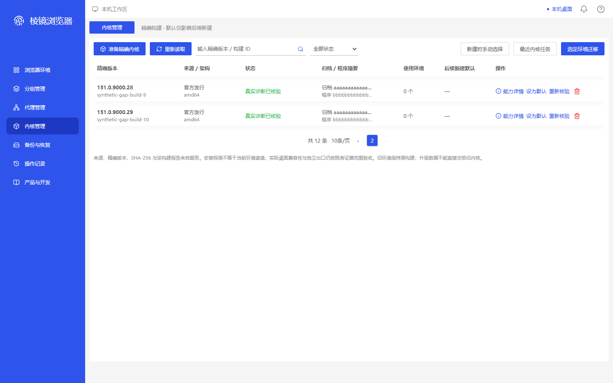
74e439c74fc725336bfe0cb91ffe8100d08dc2e0399153857fb72d3eb74de7c5
verified-gap-proxy-demo-list-dense-bottom · 1440×900
MAPPED — 演示代理第一页10行保留，分页与不访问网络、不启动真实内核的说明完整；实际表区0/630/630自然放得下，未减少数据或缩48px行/10px间隔。仅原代理列表容器映射，不是密集状态直接参考或真实检查。
同类参考容器：proxy-list；不是同名原商业执行。

fabef2049eee30a014fb58f3d5d6a742ba790bfa55a84c1a4634ae6459527900
verified-gap-proxy-demo-list-dense-page-two · 1440×900
MAPPED — 演示代理14条中的第2页末4条、页数、禁用下一页及示例检测边界完整可见；分页大小仍10，未用少行掩盖布局。仅原代理列表容器映射，不证明网络检查或产品数量配额。
同类参考容器：proxy-list；不是同名原商业执行。

8ba09920bc8816537bb0c24e3f32ab42f1c196868ff4dc66403fc47dc0aead00
verified-gap-proxy-native-list-dense-bottom · 1440×900
MAPPED — 合成本机代理第一页10行及底部完整分页可读，独立检查只是本次临时通道、桌面验收待补的说明仍在视口内；表区0/630/630自然到底。仅原代理列表容器映射，不认证真实出口或运行期保护。
同类参考容器：proxy-list；不是同名原商业执行。

17e291ac50f908a947917974ac9378b572f42e4bbecb06ef37c9c27d709c8704
verified-gap-proxy-native-list-dense-page-two · 1440×900
MAPPED — 合成本机代理末页恰好4条、页数与禁用下一页可见，独立临时通道及失败不改直连的说明完整。保留48px行、10px间隔和10条分页，仅原列表容器映射；合成状态不等于真实网络验收。
同类参考容器：proxy-list；不是同名原商业执行。
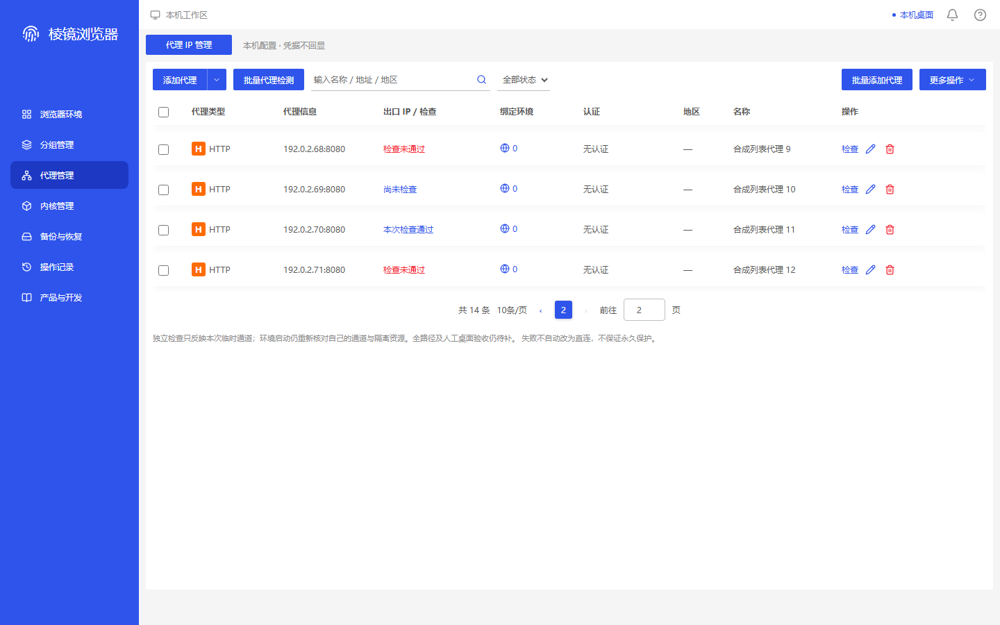
66fc5d5def523ce837fd44a31d553337d9b5e225950fac4dd0683fd7ed8e9fe3
verified-gap-kernel-install-official-unknown · 1440×900
MAPPED — 官方原请求未知说明末行及核实按钮完整可读，620×444自然高度、正文346px未截字；明确版本/摘要与不自动换版本说明保留。保存动作是同一请求核实两次、无已知任务，仅原代理添加几何锚点，不是同业务或真实安装。
同类参考容器：proxy-add；不是同名原商业执行。

229cfa84e28ac6b8735ea427dcafe46cf9d9102196faf6caa2fdec80ed7118a8
verified-gap-kernel-install-malformed-receipt · 1440×900
MAPPED — 准确旧畸形回执分支在再次核实后显示原请求未知，末行及核实按钮完整；自然620×444与官方未知图同像素。保存动作保留两次相同原请求且无已知任务；图不单独证明首次身份不符提示，仅原代理添加容器映射。
同类参考容器：proxy-add；不是同名原商业执行。
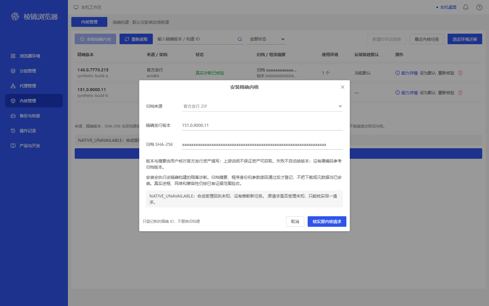
229cfa84e28ac6b8735ea427dcafe46cf9d9102196faf6caa2fdec80ed7118a8
verified-gap-kernel-task-persistence-blocked · 1440×900
MAPPED — 400×358任务窗首行结果待保存、受理1/完成0/失败0、原任务ID、红色非持久终态保护与禁用取消完整可读。保存记录下层入口也为待保存，未改原任务身份；仅原批次结果容器映射，不证明真实落盘或保存恢复。
同类参考容器：batch-progress-fixture；不是同名原商业执行。
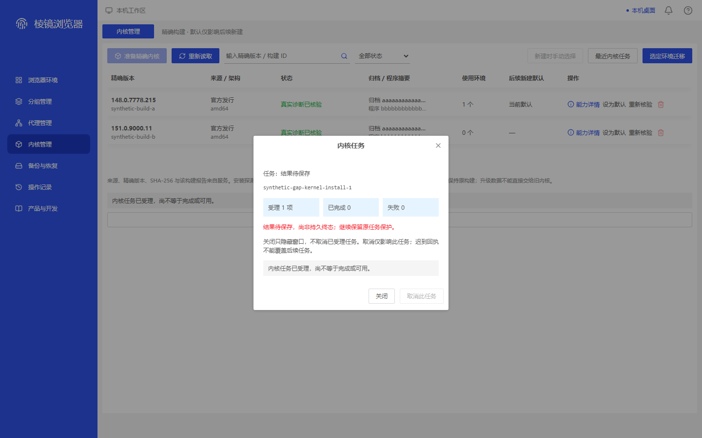
32d9be7afe88f8553ac598b1eb13c00cac67a0611e669bec97907554c23df59d
verified-gap-kernel-accepted-refresh-fault · 1440×900
MAPPED — 工作区读取失败阻断与蓝底白字恢复按钮清楚，下层任务窗保留。保存测量为92层下层inert、160层最高非inert、焦点在内、有效遮罩1及主按钮启用；不是本复核独立键盘演练或真实恢复。仅批次结果容器加安全阻断映射。
同类参考容器：batch-progress-fixture；不是同名原商业执行。
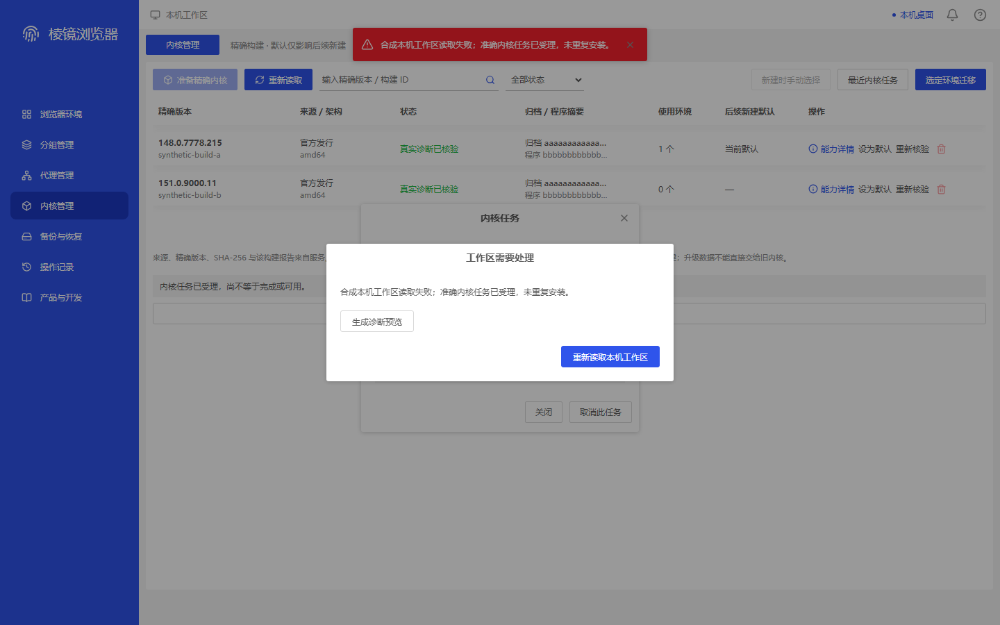
761f95a39f88a4f2ce1db4deafd86114457b564733c74ce8b3ec431cf8bab1f7
verified-gap-kernel-accepted-refresh-recovered · 1440×900
MAPPED — 阻断消失，400×328原任务显示已受理等待执行、受理1/完成0/失败0，关闭和取消可读。保存合成场景一次安装、零取消、准确来源与原环境身份及路由返回同任务；仅结果容器映射，不证明安装完成或真实工作区恢复。
同类参考容器：batch-progress-fixture；不是同名原商业执行。
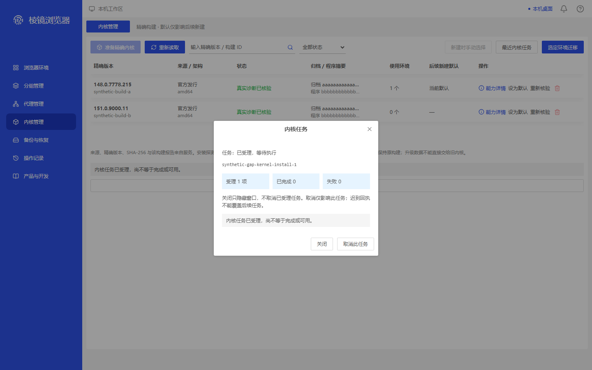
6381a6b1081b7b7fca575fe8fa925fdb25539ec2133ba49bccc49eb484202777
verified-gap-kernel-local-invalid-fields · 1440×900
MAPPED — 原生格式气泡英文、橙色警告图标与白底黑字在原尺寸图清楚可读，版本蓝色焦点线及无效字段可见，620×530未切边。保存无效提交后仅额外等400ms、版本patternMismatch/实际焦点成立且安装0；可读结论来自看图，不由延迟推断。仅表单容器映射。
同类参考容器：proxy-add；不是同名原商业执行。
c21fabb7fe47352a100b481c2700790d699ef6009e5127939363e8c71d0251e4
verified-gap-kernel-demo-list-dense-bottom · 1280×800
MAPPED — 演示内核实际表区底端可见末行，分页698–746及能力说明754–772完整留在视口；保存72/630/558、第一页仍10行/48px行/10px间隔。前行随表区滚出不是缺行，仅原代理列表容器映射，不证明真实安装。
同类参考容器：proxy-list；不是同名原商业执行。
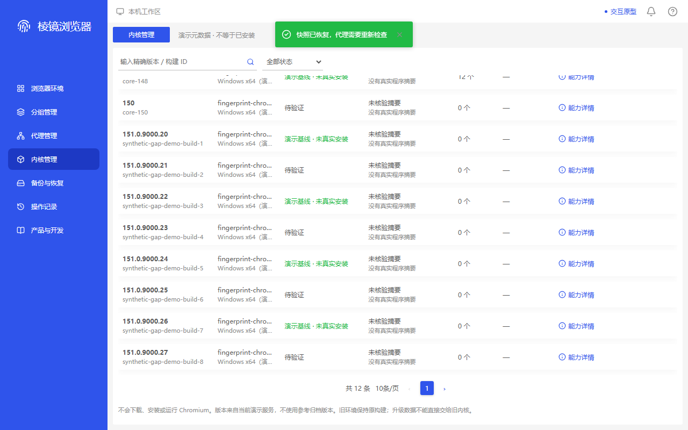
bd0dbf7f36be4577045af1080988b7872e6bcfecba19f22abc21b01c4207cde5
verified-gap-kernel-demo-list-dense-page-two · 1280×800
MAPPED — 演示内核第2页末两条合成元数据完整，页标2、禁用下一页、分页与能力说明清楚；保留48px行/10px间隔及10条分页。仅原代理列表容器映射，原图不是该密集内核末页或真实登记。
同类参考容器：proxy-list；不是同名原商业执行。
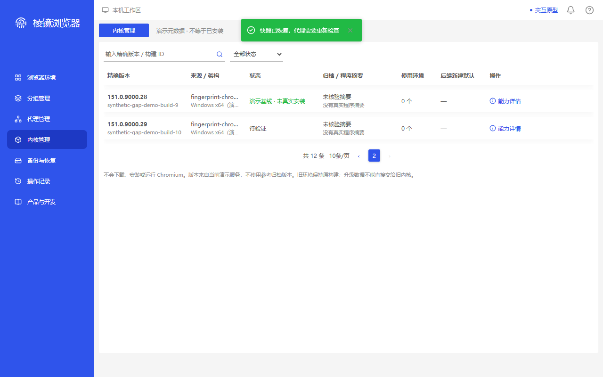
cb1431dc56e02610be831ec60cc13cccc6368631aff8fbb2c3cc683de63fc280
verified-gap-kernel-native-list-dense-bottom · 1280×800
MAPPED — 合成本机内核真实表区底端及末行可见，分页698–746、能力说明754–772完整，未减第一页10行或缩48px行/10px间隔；保存72/630/558。仅原代理列表容器映射，服务报告不是本次真实安装或环境读值验收。
同类参考容器：proxy-list；不是同名原商业执行。
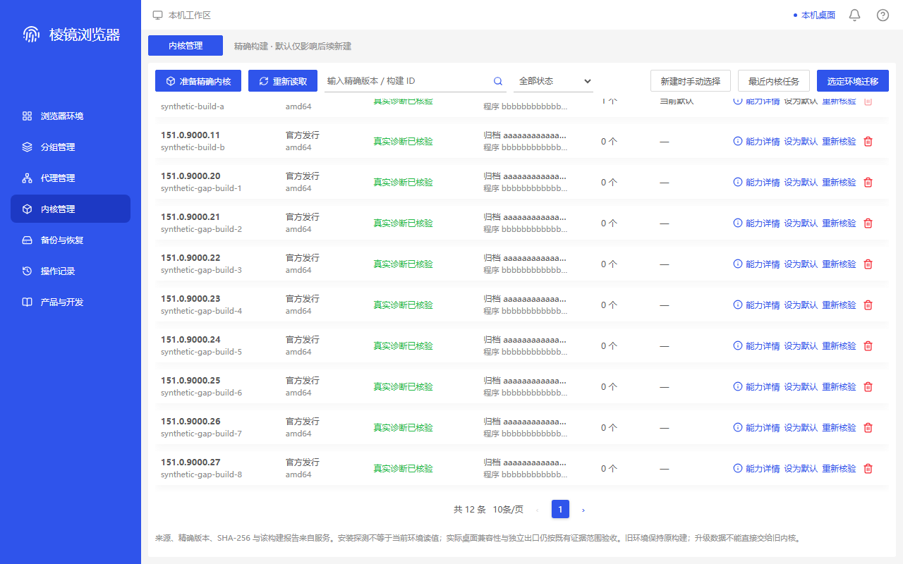
11b0f42009d69743ab43e686b8aab45063deb213d6d8612f09dacefdecebbfff
verified-gap-kernel-native-list-dense-page-two · 1280×800
MAPPED — 合成本机内核末页准确两条构建及操作可读，完整分页、页标2、禁用下一页与能力边界可见；原48px行、10px间隔保留。仅原代理列表容器映射，不认证真实核验、兼容性或安装完成。
同类参考容器：proxy-list；不是同名原商业执行。
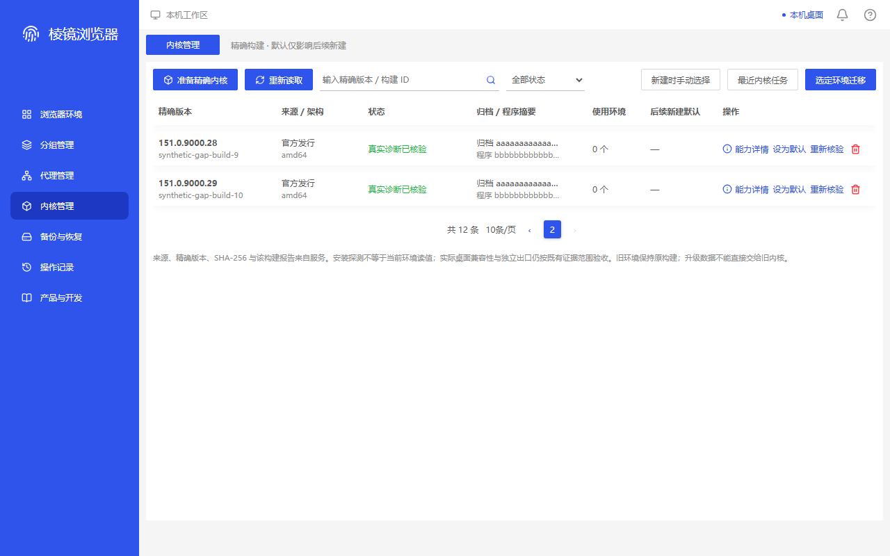
2d114f7181e5d1f2d4d437717f5c08081454516cba0e6ecc7d07f0d1cc1bca7c
verified-gap-proxy-demo-list-dense-bottom · 1280×800
MAPPED — 演示代理第一页实际表区底部，末行、完整分页与示例检测不访问网络的边界可读；保存72/630/558、10行/48px行/10px间隔不变。仅原代理列表容器映射，表头与前行滚出不是删数据，也不是真实检查。
同类参考容器：proxy-list；不是同名原商业执行。
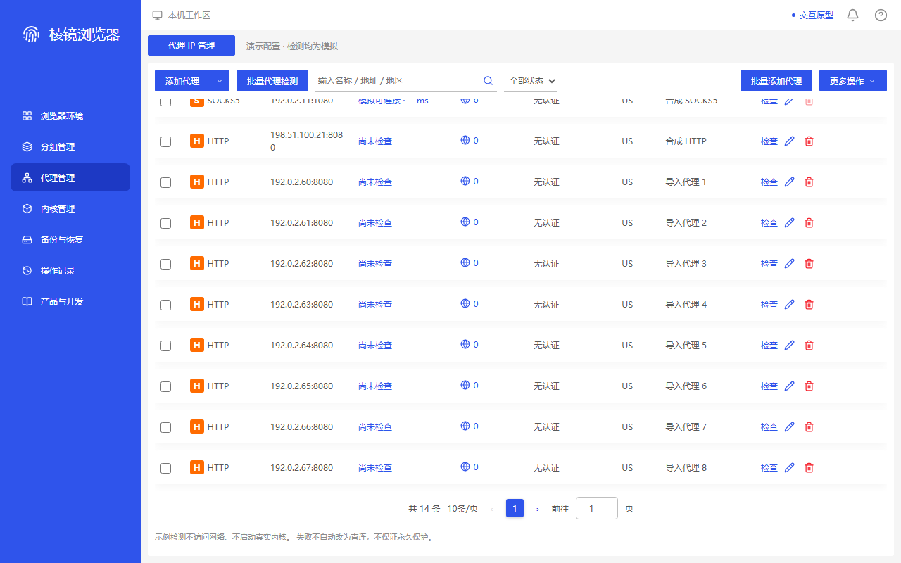
4de91faea08b5a6306e932c11357587f19c48e7005e1fa7343e9c9b2180cdf11
verified-gap-proxy-demo-list-dense-page-two · 1280×800
MAPPED — 演示代理第2页末4条准确记录、页标与禁用下一页可见，分页及示例检测边界完整；14条数据与10条分页未缩减。仅原代理列表容器映射，不代表真实网络检查或产品环境配额。
同类参考容器：proxy-list；不是同名原商业执行。
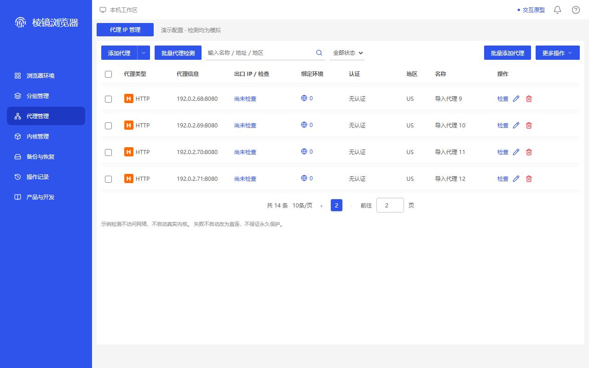
704fdece50e70e6ad10bbd4de10246dc8a37d3a6e12d3573e6fc6bcef2fc31a7
verified-gap-proxy-native-list-dense-bottom · 1280×800
MAPPED — 合成本机代理实际表区底部及末行可见，完整分页与独立临时通道、桌面待验及失败不改直连说明留在视口；保存72/630/558，仍10行/48px行/10px间隔。仅原代理列表容器映射，不认证真实出口或保护链。
同类参考容器：proxy-list；不是同名原商业执行。
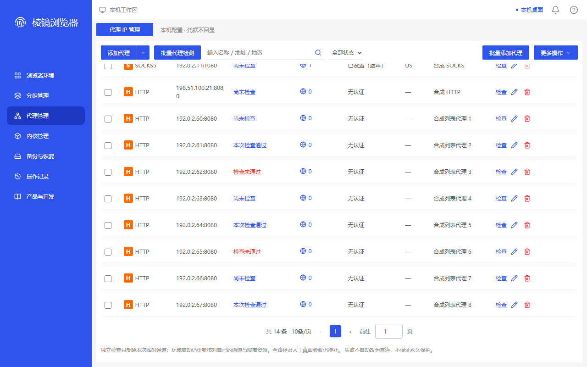
c568efa15e713e320347d14578244f9736e2904a741fbc7dd2d13e747669f809
verified-gap-proxy-native-list-dense-page-two · 1280×800
MAPPED — 合成本机代理第2页恰好4条，完整分页、页标2、禁用下一页及能力说明可读，保留48px行/10px间隔和10条分页。仅原代理列表容器映射；合成列表状态不证明真实检查或永久保护。
同类参考容器：proxy-list；不是同名原商业执行。
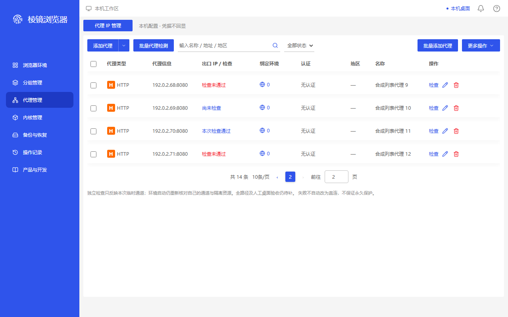
f9b124e6be1a1dc4eb5deed9caa29522d7b391ba4ff593139e150d6daa1f7ce7
verified-gap-kernel-install-official-unknown · 1280×800
MAPPED — 官方原请求未知提示510–560完整处于正文底572之前，620×444自然高度，取消/核实按钮未遮字；准确版本/摘要和不自动换版本说明保留。保存两次同一原请求、无已知任务，仅原代理添加几何映射，非真实安装。
同类参考容器：proxy-add；不是同名原商业执行。

6513faca7aa62b6e2b96f19a2cbd1595d6bf16385bd254097d7973bc2f61659f
verified-gap-kernel-install-malformed-receipt · 1280×800
MAPPED — 准确旧畸形分支再次核实后的未知提示末行完整，620×444自然高度与核实按钮可读，与官方未知图字节相同但动作记录独立。保存两次同一原请求且无已知任务；本图不是首次身份不符错误提示，仅原代理添加容器映射。
同类参考容器：proxy-add；不是同名原商业执行。
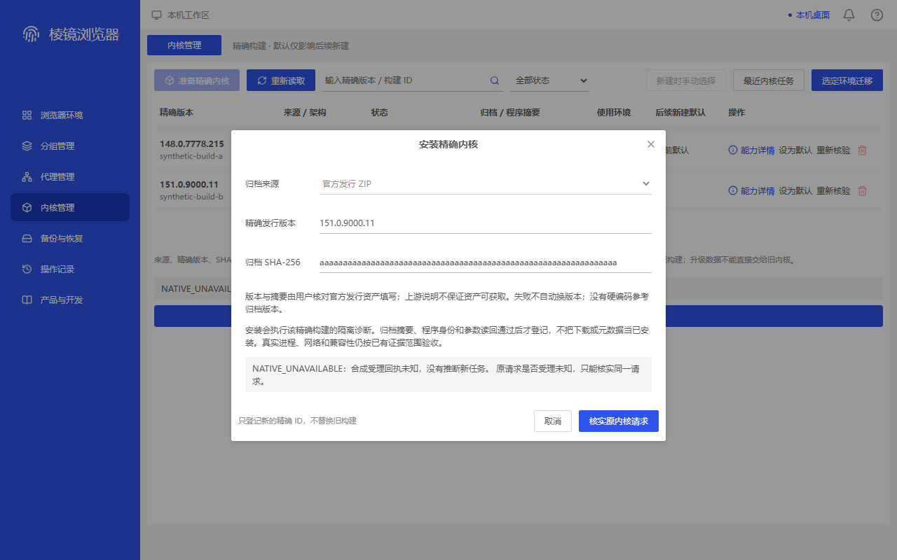
6513faca7aa62b6e2b96f19a2cbd1595d6bf16385bd254097d7973bc2f61659f
verified-gap-kernel-task-persistence-blocked · 1280×800
MAPPED — 400×358任务窗首行结果待保存、受理1/完成0/失败0、原任务ID、红保护说明及禁用取消完整；保存下层入口同为待保存，取消请求0。未改原合成任务状态掩盖问题，仅结果容器映射，不证明真实落盘或恢复终态。
同类参考容器：batch-progress-fixture；不是同名原商业执行。
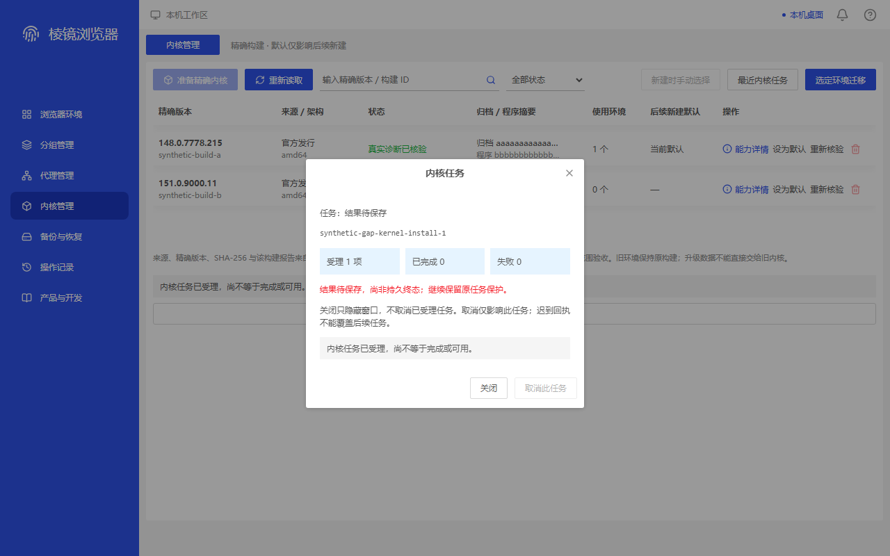
f556e81ba4b9b80666cdd88589c92fb4bee09dee92821947260246c0676daf18
verified-gap-kernel-accepted-refresh-fault · 1280×800
MAPPED — 500×198读取失败阻断、诊断入口和蓝底白字重新读取按钮清楚，下层原任务窗保留。保存92层inert/透明下层mask、160层最高非inert、焦点在内/有效mask1/主按钮启用相符；未独立键盘或真实恢复，仅结果容器加安全阻断映射。
同类参考容器：batch-progress-fixture；不是同名原商业执行。
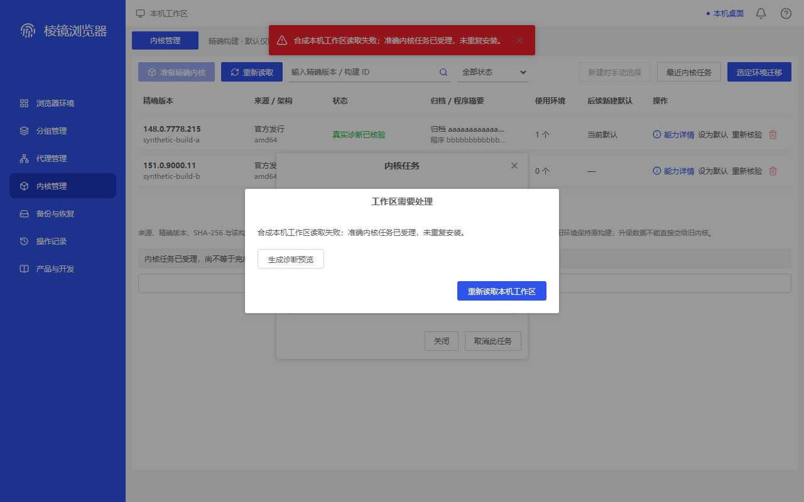
e556aff6561e72ff42533d02f320003dc45cdd5290ae74e7d18b7fc46e700e87
verified-gap-kernel-accepted-refresh-recovered · 1280×800
MAPPED — 阻断消失后400×328原受理任务仍等待执行，受理1/完成0/失败0及关闭/取消完整可读。保存合成一次安装、零取消、准确原请求来源和原环境身份及路由返回同任务；仅结果容器映射，不证明安装完成或真实工作区恢复。
同类参考容器：batch-progress-fixture；不是同名原商业执行。
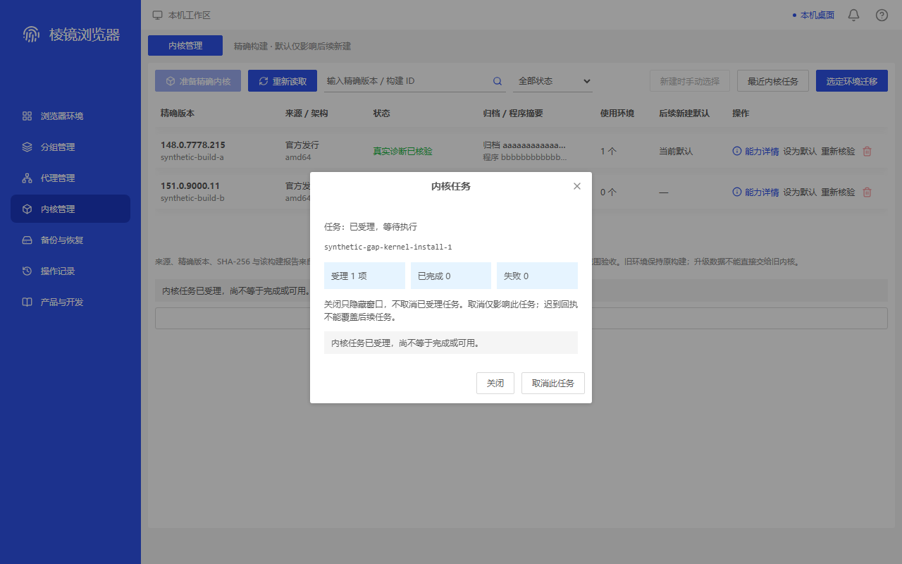
12ded270f7bbf8197dd9f0c5e83b34fd5ffd7014e678f4c12c38e99af26c5439
verified-gap-kernel-local-invalid-fields · 1280×800
MAPPED — 原生格式气泡英文、橙色警告图标与白底黑字在原尺寸图完整清楚可读，版本蓝色焦点线及错误字段可见，620×530未切边。保存真实无效提交后仅额外400ms、版本patternMismatch/实际焦点成立且合成安装0；可读性由看图确认，非延迟断言自动通过。仅表单容器映射。
同类参考容器：proxy-add；不是同名原商业执行。
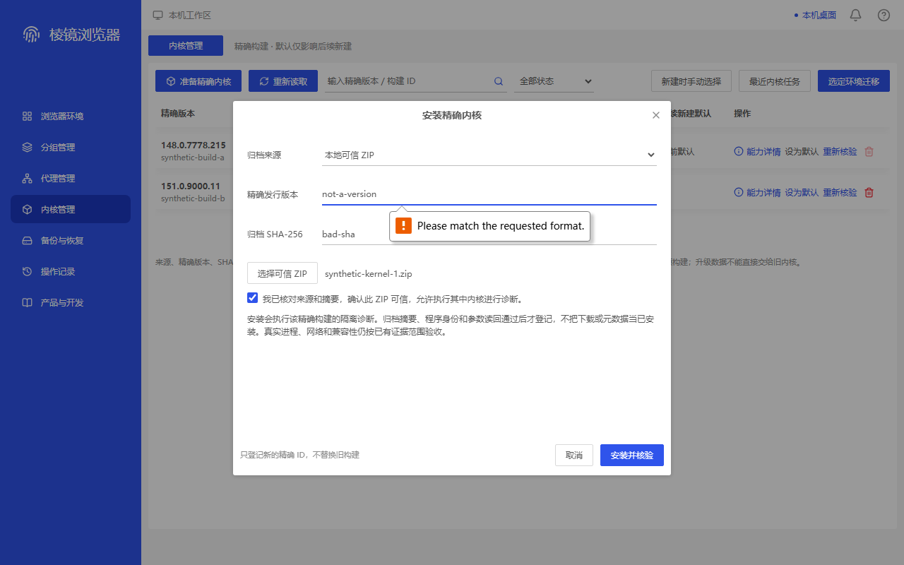
51bd2016fa0afc061cfb12dbd7a9a0de7c2670ed787401d114477b67f341018c